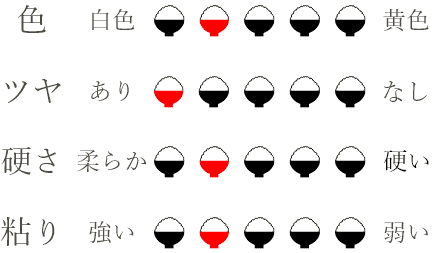
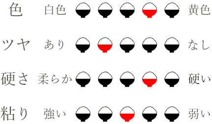
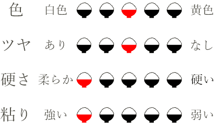
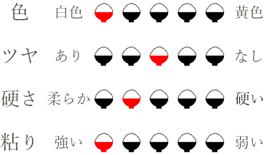

お米の紹介
八幡高原米
標高700ｍ以上にあり、
太田川源流の澄んだ水が流れる八幡高原。
きれいで冷たい水や夏場の寒暖差など恵まれた環境で育ち、
甘みが強くて美味しい風のあしあと。
その美味しさの秘訣は、
他ならぬ、八幡高原のこの類稀なる大自然。
毎日真心を込めてお米を栽培しております。

標高700ｍ以上にあり、
太田川源流の澄んだ水が流れる八幡高原。
きれいで冷たい水や夏場の寒暖差など恵まれた環境で育ち、
甘みが強くて美味しい風のあしあと。
その美味しさの秘訣は、
他ならぬ、八幡高原のこの類稀なる大自然。
毎日真心を込めてお米を栽培しております。
「程よい粘りと芳醇な香り」
コシヒカリの特徴は、うま味と粘り、光沢の美しさ、香りです。
口に入れた瞬間、お米特有の香りが鼻から抜け、噛めば噛むほど甘味が増し、お米の風味が口の中に広がります。
バランスの取れた成分と日本人が好む柔らかさであることから、高く評価されています。
【お弁当にぴったり】
冷めてもモチモチした食感と味を楽しむことができます。お米の味を長く維持することができるため、仕事や学校のお弁当にピッタリです。
売れ筋No.1
「甘み、さっぱりとした歯切れのよい味わい」
涼しい気候で育てている為毎年安定した品質で、暑い気候で栽培されたものよりも真っ白いお米（シラタ）が少なく高品質です。
うま味や甘み、粘りを強く引き継ぎモチモチとした食感の中にしっかりとした歯ごたえがあります。
【和食との相性抜群】
味が立っていながらもあっさりとして和食や納豆、浅漬けなどのサイドメニューにも相性抜群。和食の繊細な味付けのバランスを崩さず、素材の味を引き立てることができます。
「強い粘り、もちもちした味わい」
粘りがあり、もちもちした美味しいお米です。口当たりは優しく噛むほどに甘みがあります。
本品を食べたらほかの品種を食べられなくなる、と遠方から買いに来られる方もいるほどファンが多い品種です。
【お弁当にぴったり】
コシヒカリと同様にお米の味を長く維持することができるため、仕事や学校のお弁当にピッタリです。
「香りがよく、柔らかすぎないもち米」
もち米というとお餅になるイメージが強いと思いますが、炊いてそのまま召し上がって頂いてもおいしいです。
「柔らかすぎず香りが良くクセがなくとても食べやすい。」と大変ご好評を頂いております。
【お餅などにぴったり】
冷めてもモチモチした食感と味を楽しむことができます。お米の味が長く継続するのでおこわやお餅はもちろん、炊きこみご飯にもおすすめです。
さすがぶなの里！毎日の美味しいご飯に感謝！
埼玉の米どころで育った私はコシヒカリ以外は買わない主義でしたが玄米で最高に美味しい！という藤原さんのススメで生まれてはじめてミルキークイーンを購入。
玄米でも精米しても、美味しかった！
元気ですかー？と聞いたら、元気ですー!と返事してくれそうな米粒
ぶなの里のコシヒカリは、精米して米を研いだ時、ひと粒ひと粒がしっかりしているなぁ、と、いつも思います。美味しいはずです。
家族、友人、従兄妹、親戚、皆大喜び
お陰さまで、美味しいお餅をいただいています。お赤飯、炊き込みおこわ、イカ飯も、美味しいもち米のおかげで、いつも高評価をいただいてます。
冬場でも硬くならず食べやすいと好評
とても柔らかくモチモチした食感が楽しめるお米です。お弁当やおにぎりを作る機会が多いのですが、また、炊き込みご飯を作るとおこわのような仕上がりになるので気に入っています。
元々米作りをしていた父も納得の品質
炊き上がりの香りやツヤがよいため、最初に炊飯器を開ける瞬間がたまりません。粒感と甘味もあり『ご飯を食べる』事が楽しめます。
お餅にするととても綺麗な仕上がり
毎年、餅つき用に購入させていただいています。お米がとても綺麗で白く、おこわやお赤飯を作ってもクセがなくとても食べやすいです。